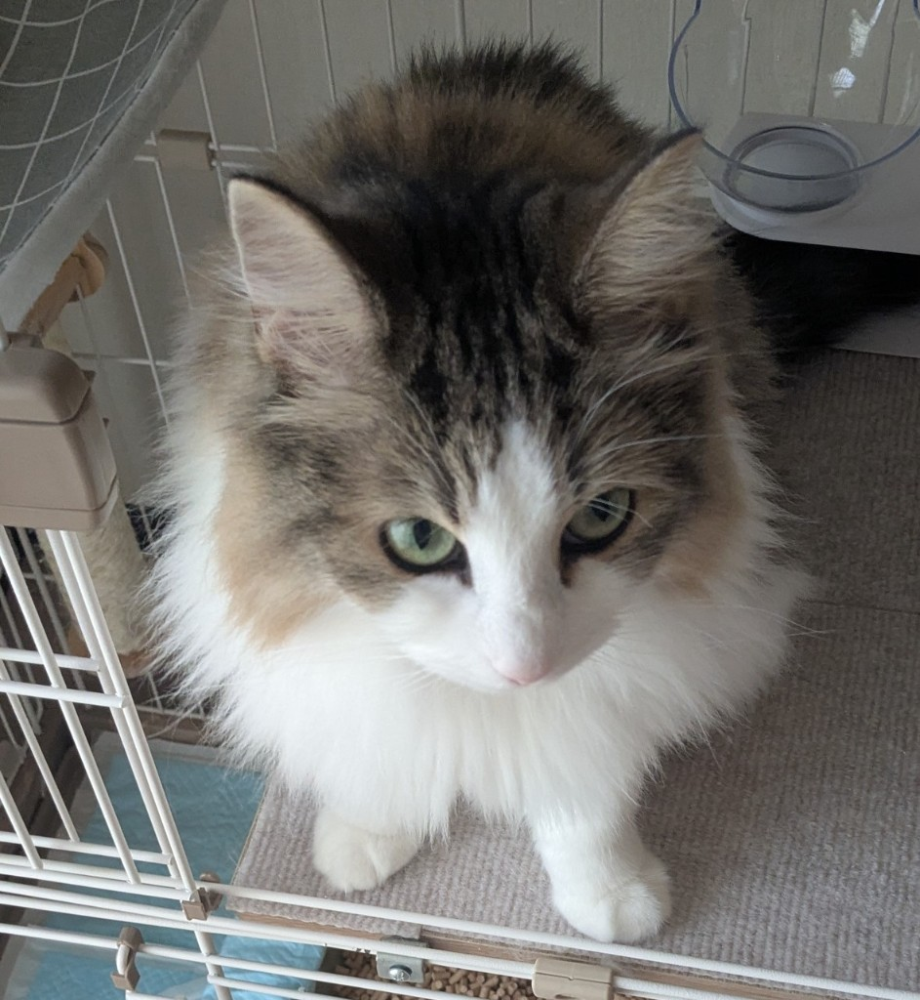
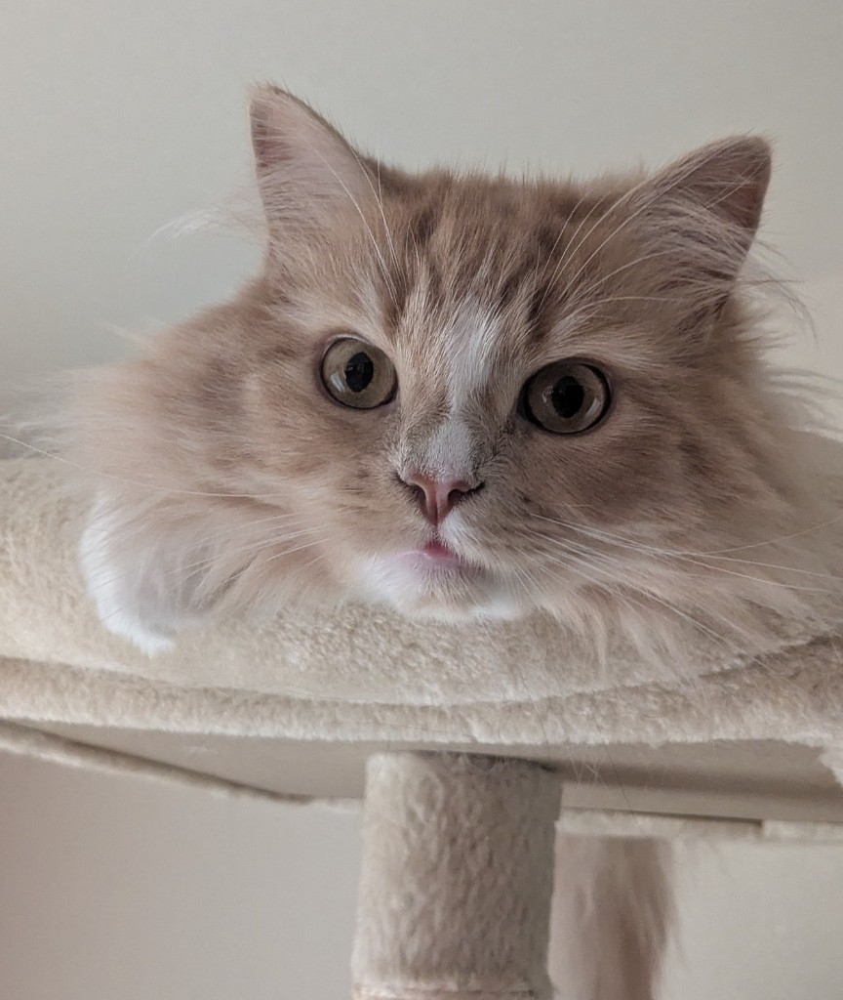

我が家の2匹の猫をご紹介！ラテとモカ
こんにちは！
今回は、我が家で一緒に暮らしている2匹の猫を紹介したいと思います。


ノルウェージャンフォレストキャットの「ラテ」
ラテはノルウェージャンフォレストキャットの女の子です。
初めて一緒に暮らして感じたのは、とても落ち着いていて、おおらかな性格ということでした。
普段はマイペースで、自分の好きな場所でのんびり過ごすことが多く、あまり細かいことは気にしません。
「クール」という言葉がぴったりですが、決して冷たいわけではなく、近くで静かに寄り添ってくれる優しい一面もあります。
サイベリアンの「モカ」
モカはサイベリアンの女の子です。
ラテとは正反対で、とても甘えん坊。
私が歩くと後ろをついてきたり、膝の上に乗ってきたりと、人と一緒にいるのが大好きです。
さらに遊ぶことも大好きで、家中を元気いっぱい走り回っています。
そのやんちゃな姿には毎日のように笑わせてもらっています。
同じ猫でも性格はこんなに違う
猫を飼う前は、「猫はみんな似たような性格なのかな」と思っていました。
しかし、実際に2匹と暮らしてみると、その考えはすっかり変わりました。
ラテは落ち着いた大人のような性格。
モカは子どものように元気いっぱいで甘えん坊。
同じ猫でも、種類や個体によってここまで性格が違うことに驚いています。
だからこそ、それぞれの個性を知ることができ、一緒に暮らす毎日がとても楽しいです。
これからも猫との暮らしを発信します
このブログでは、ラテとモカの日常や、猫と暮らしていて感じたこと、おすすめの猫グッズなども紹介していきたいと思います。
猫好きの方はもちろん、「これから猫を飼ってみたい」という方にも楽しんでいただける記事を書いていきますので、ぜひまた遊びに来てください！